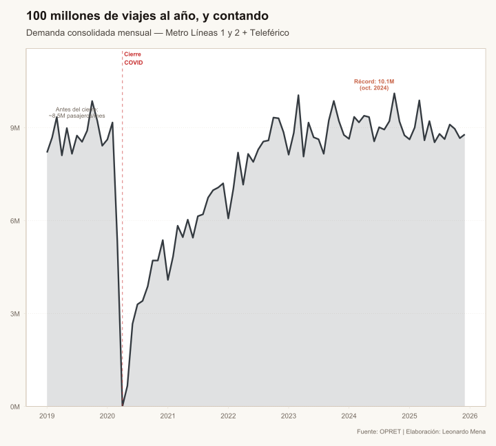
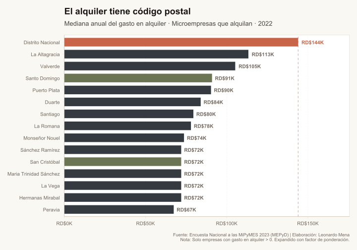
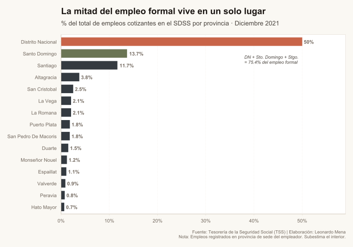
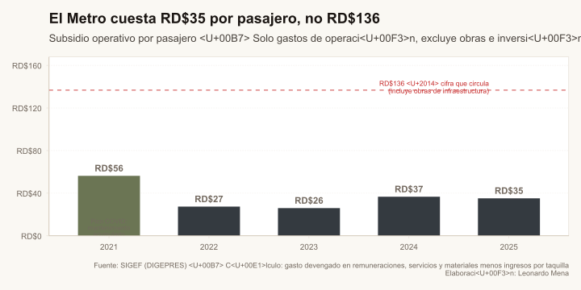

Transporte masivo: Qué es, qué no es y qué trae a la mesa
Transporte
Desarrollo
MiPyMES
La República habla de
El Metro de Santo Domingo transporta más de 100 millones de personas al año, pero el parque vehicular sigue creciendo. Un análisis de qué puede y qué no puede hacer el transporte masivo por la economía dominicana.
Ya sea desde la mañana al salir hacia su trabajo, o al regresar a casa por la tarde, José, María o Juan dedican una parte importante de su día en el transporte. En el mejor de los escenarios el destino se encuentra cerca de su hogar, pero en la mayoría de los casos, el transporte es un proceso largo, agotador e incómodo para el dominicano promedio.
Los tapones, el calor, el hacinamiento en vehículos viejos y en mal estado o el alto costo del pasaje, son tan solo algunos de los problemas que enfrentan diariamente los dominicanos… pero algo está cambiando. En los últimos años, el transporte masivo se ha convertido en una realidad cada vez más cercana, y con ello, surge la esperanza de un futuro mejor en cuanto a movilidad se refiere.
Pero dado que nada viene sin un coste, es importante entender tanto las ventajas como los desafíos que el transporte masivo trae consigo. En este artículo exploraremos qué puede y qué no puede hacer el transporte masivo en la República Dominicana, y por qué el debate sobre su costo fiscal suele empezar con los números equivocados.
Conclusiones Clave
- El Metro no sustituye al carro: y los datos del parque vehicular lo confirman sin ambigüedad.
- Sí mueve a más de 100 millones de personas al año: reduce tiempos y costos reales para quienes dependen del sistema.
- El subsidio operativo real es RD$35 por pasajero: no RD$136. La diferencia está en confundir inversión en infraestructura con gasto operativo.
- El impacto más subestimado es territorial: el transporte masivo puede reducir la prima de accesibilidad que hoy encarece el alquiler en el Distrito Nacional y desconecta a las MiPyMES periurbanas del mercado laboral central.
Nota metodológica
El artículo combina series administrativas de OPRET/SIGEF, parque vehicular de la DGII, datos de tránsito de la JTCE y evidencia territorial de ENMIPYMES/TSS. El subsidio operativo se estima separando gasto recurrente de inversión de capital: remuneraciones, servicios y materiales menos ingresos por taquilla, dividido entre pasajeros transportados. Las obras de expansión se tratan como inversión en infraestructura, no como costo operativo por viaje.
Qué no es el transporte masivo
Lo primero que debemos aclarar es que el transporte masivo, al menos de manera empírica, no es sustituto por sí solo del transporte privado. Juan, joven trabajador de 22 años, con muchos sueños por lograr — uno de ellos tener su propio carro — no ve el transporte público como su alternativa a futuro, sino más bien como un paso en su vida. El caso de Juan es el de muchos jóvenes dominicanos, que aunque valoran el transporte masivo, no lo ven como su destino final, sino como una etapa en su camino hacia la movilidad privada.
Y de hecho los datos reflejan que dicha situación ha sido la norma incluso con la inclusión del metro y otros sistemas de transporte masivo. Gran parte de los dominicanos sigue apostando al transporte privado.
+158% Crecimiento del parque vehicular desde la inauguración del Metro en 2009
Desde la inauguración del metro, el parque vehicular dominicano ha crecido en más de un 150%, pasando de 2.1 a 5.8 millones de unidades registradas. En el mejor de los casos podemos inferir que el transporte masivo ha ayudado a mitigar el crecimiento del parque vehicular, pero no a frenarlo. La tendencia se mantiene sin interrupción visible en cada uno de los tres hitos de expansión del sistema.
El Metro no compite con el carro. Compite con el tiempo y el dinero que el dominicano promedio pierde sin él.
Así que dejando esto atrás, ¿significa que el transporte masivo no tiene ningún impacto en general? No necesariamente. Si nos alejamos de esta expectativa equivocada, sí podemos identificar dónde el Metro ya está haciendo la diferencia.
• • •
Qué sí es el transporte masivo
El Metro de Santo Domingo es, ante todo, un sistema que mueve personas reales a diario. Con más de 100 millones de pasajeros al año se ha convertido en una parte fundamental de la movilidad urbana capitalina. Pero el transporte masivo no solo se trata del volumen, también importa cómo lo hace.
José, residente de Villa Mella, debía enfrentarse al hacinamiento en el carro público, con viajes de hasta 2 horas en tapón y a un costo de 60 pesos el viaje. Con la llegada del metro, José ahora puede llegar a su trabajo en 30 minutos, a 35 pesos, sin lidiar con el tapón ni el calor.

Más de 10 millones de pasajeros al mes representan tiempo devuelto, dinero ahorrado y energía preservada para algo distinto al tapón. Aunque muchos de esos pasajeros no abandonaron el transporte privado por completo, sí encontraron en el Metro una opción complementaria — y ese es precisamente el impacto que hay que medir, no el que nunca fue promesa del sistema.
• • •
Las MiPyMES y el transporte masivo
El transporte masivo no solo modifica la movilidad de las personas. También tiene un impacto directo en la economía local, especialmente en las micro, pequeñas y medianas empresas que se encuentran o podrían encontrarse cerca de las estaciones. Para entender por qué, hay que mirar primero dónde están concentrados el trabajo y sus costos.
El alquiler tiene código postal
Una de las variables de mayor peso en los gastos de las MiPyMES es el alquiler — que en la Encuesta Nacional a las MiPyMES 2023 representa alrededor del 34% de los costos operativos medianos de quienes alquilan. Y aquí el transporte tiene mucho que decir.

El diferencial de alquiler en números
Una microempresa en el Distrito Nacional paga una mediana de RD$144,000 anuales en alquiler. La misma empresa en Santo Domingo provincia paga entre RD$74,000 y RD$90,000 — entre 37% y 48% menos. Ese diferencial no refleja una diferencia en productividad: refleja una diferencia en accesibilidad.
El alquiler es una función de la ubicación, y el Distrito Nacional lleva la prima más grande porque allí es donde está el trabajo. Pero eso nos lleva a la siguiente pregunta.
¿Por qué todo el trabajo está en el mismo lugar?

Aunque los datos del TSS subestiman la participación del interior — los empleos se registran en la provincia de sede del empleador, no donde trabaja el empleado — es difícil que los números variarían lo suficiente como para quitarle la primacía al Distrito Nacional. El 50% del empleo formal cotizante está concentrado en un territorio que representa apenas una fracción del país.
Lugares como Santo Domingo provincia y San Cristóbal pagan entre 37% y 48% menos de alquiler que el DN — y aun así no logran atraer empleo formal. La barrera no es productividad: es accesibilidad.
Aquí es donde el transporte masivo juega su papel más silencioso pero potencialmente más poderoso: reducir la prima de accesibilidad. Si conectar San Cristóbal o Los Alcarrizos con el Gran Santo Domingo permite que más empresas se establezcan en esas zonas sin sacrificar acceso a clientes y trabajadores, el beneficio del Metro trasciende el viaje individual de José y empieza a reconfigurar la geografía económica del país.
• • •
¿Dónde está la trampa?
El gasto fiscal — y por qué el número que circula está mal
El debate sobre el subsidio al Metro tiene un problema de origen: mezcla el costo de construir infraestructura con el costo de operarla. Son cosas distintas, y confundirlas lleva a conclusiones equivocadas.

Cómo se calculó el subsidio operativo real
Los datos provienen de la ejecución presupuestaria de OPRET en el SIGEF (DIGEPRES). El subsidio operativo se calcula como la diferencia entre el gasto devengado en remuneraciones, servicios y materiales — excluyendo obras e inversión de capital — y los ingresos por taquilla. La cifra de RD$136 que circula en el debate público incluye los años de construcción de la L2C (US$507M), que representa una inversión en activos de larga vida útil, no un costo recurrente de operación.
El subsidio operativo real del Metro ha oscilado entre RD$26 y RD$56 por pasajero entre 2021 y 2025. El pico de 2021 responde al mantenimiento acumulado durante el cierre por COVID, no a ineficiencia estructural. En condiciones normales, el costo que el Estado asume por cada viaje es de alrededor de RD$35 — una cifra que, en contexto, es perfectamente comparable con los subsidios de sistemas equivalentes en América Latina.
Que el sistema requiera un subsidio permanente no es en sí mismo un problema. El Metro de Santo Domingo no se autofinancia — ningún sistema de metro urbano en el mundo lo hace a su nivel de tarifa. Lo que importa es si ese subsidio es eficiente y si el servicio que compra justifica su costo. Con 107 millones de pasajeros al año, la evidencia apunta a que sí.
El impacto territorial — el riesgo que no se discute
El mismo mecanismo que convierte al Metro en un motor de desarrollo puede, si no se gestiona, convertirlo en una herramienta de desplazamiento. La evidencia internacional sobre gentrificación alrededor de estaciones de transporte masivo es extensa: la accesibilidad eleva el valor del suelo, y ese valor sube antes de que las mejoras lleguen a los residentes originales, no necesariamente un problema económico, pero si puede desencadenar en conflictos sociales.
• • •
Conclusión
El transporte masivo es una herramienta poderosa para mejorar la movilidad de los dominicanos y para reconfigurar la geografía económica de las ciudades, pero no es una solución mágica, y tampoco es gratuita.
El Metro de Santo Domingo transporta más de 100 millones de personas al año. No eliminó el carro, y probablemente nunca lo hará. Lo que sí ha logrado, y lo que la Línea 2C a Los Alcarrizos puede profundizar, es reducir el costo real de moverse, ampliar el radio de mercado laboral accesible para las MiPyMES periurbanas, y descongestionar aunque sea marginalmente, la primacía aplastante del Distrito Nacional.
El subsidio de RD$35 por pasajero no es un derroche. Es el precio de mantener activo un sistema que presta un servicio real a quienes más dependen de él. La conversación importante no es si el Metro debe subsidiarse, sino qué se hace con la infraestructura que ya existe y cómo se diseña la expansión futura para que sus beneficios lleguen a quienes más los necesitan.
Puntos clave - El parque vehicular creció +158% desde 2009. El Metro mitiga, no elimina, la demanda de transporte privado. - El sistema transporta más de 107 millones de pasajeros al año — un récord de 10.1M en octubre de 2024. - El subsidio operativo real es RD$35 por pasajero, no RD$136. La diferencia es inversión en infraestructura, no gasto corriente. - El impacto más subestimado es territorial: el Metro puede reducir la prima de accesibilidad que hoy encarece el alquiler en el DN y desconecta a las MiPyMES periurbanas del mercado laboral central. - El riesgo más silencioso es la gentrificación alrededor de estaciones — un desafío que requiere política de suelo activa, no solo infraestructura.
Fuentes de Datos & Referencias
OPRET / SIGEF (DIGEPRES)
Ejecución presupuestaria utilizada para separar operación corriente, inversión de capital e ingresos por taquilla del Metro de Santo Domingo.
Consultar SIGEF ↗DGII
Parque vehicular por tipo de vehículo, usado para contrastar la expansión del transporte masivo con el crecimiento de la movilidad privada.
Ver parque vehicular ↗JTCE / OPRET
Series de pasajeros transportados y operación del sistema, utilizadas para calcular magnitudes anuales y costo operativo por viaje.
Ver OPRET ↗ENMIPYMES / TSS
Datos de estructura empresarial, empleo formal y territorio usados para conectar movilidad, accesibilidad y oportunidades productivas.
Ver Banco Central ↗